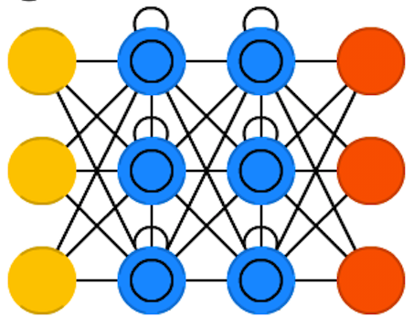

Music Generation with Magenta
Using Machine Learning in Arts
Alexandre DuBreuil
@dubreuia
Alexandre DuBreuil
Software engineer, conference speaker, open source maintainer and sound designer
@dubreuia
Generative Music
(in 5 minutes)
Example: Musikalisches Würfelspiel
Back in the 18th century, a "musical dice game" was popular, where the result of a dice throw would choose a segment of a predefined score, creating a score when repeated.
Random generative art: the outcome of the generated art is partially or completely defined by the chance's outcome
en.wikipedia.org/wiki/Musikalisches_W%C3%BCrfelspielExample: Algorave
An Algorave is an event where people dance to music generated from algorithms, often using live coding techniques, and short for "algorithmic rave".
Rule based / algorithmic generative art: the result of such generation is deterministic and defined by a set of rules.
en.wikipedia.org/wiki/AlgoraveExample: Illiac Suite
The Illiac Suite is one of the first score composed by an electronic computer. In one of the fourth movement, Markov Chains are used.
Stochastic generative art: the artwork generation is probabilistic.
en.wikipedia.org/wiki/Illiac_SuiteWhat?
"Generative art is an artwork partially or completely created by an autonomous system"
Why?
Helps inspiration. Help content creators (artists). Make music without being a musician. Create autonomous generation systems (infinite radios, etc.)
And Machine Learning?
Hand crafting the rules of a painting or the rules of a music style might be a hard task. That's why Machine Learning is so interesting in arts: it can learn complex function.
In many ways, Machine Learning generative art is stochastic.
Music generation with RNNs
 Recurrent Neural Networks (RNNs) solves two important problems for
music generation: operating on sequences for the inputs
and outputs and keeping an internal state of
past events.
Recurrent Neural Networks (RNNs) solves two important problems for
music generation: operating on sequences for the inputs
and outputs and keeping an internal state of
past events.
{kind=link}
Long-term structure with LSTMs
 Most RNN uses Long Short-Term Memory (LSTM) cells, because by themselves, RNNs are hard to train because of the problems of vanishing and exploding gradient, making long-term dependencies hard to learn.
By using input, output and forget gates in the cell, LSTMs can learn mechanisms to keep or forget information as they go.
https://www.asimovinstitute.org/wp-content/uploads/2016/09/lstm.png{kind=link}
Latent space interpolation with VAEs
 Variational Autoencoders (VAEs) are a pair of networks where an
encoder reduces the input to a lower dimentionality (latent
space), from which a decoder tries to reproduce the
input.
Variational Autoencoders (VAEs) are a pair of networks where an
encoder reduces the input to a lower dimentionality (latent
space), from which a decoder tries to reproduce the
input.
The latent space is continuous and follows a probability distribution, meaning it is possible to sample from it. VAEs are inherently generative models: they can sample and interpolate (move in the latent space) between two points.
https://www.asimovinstitute.org/wp-content/uploads/2016/09/vae.png{kind=link}
Audio generation with WaveNet Autoencoders
 WaveNet is a convolutional neural network (CNN) taking raw signal
as an input and synthesizing output audio sample by sample. The
WaveNet Autoencoder present in Magenta is a AE network capable of
learning its own temporal embedding, resulting in a latent space
from which is it possible to sample and
mix elements.
WaveNet is a convolutional neural network (CNN) taking raw signal
as an input and synthesizing output audio sample by sample. The
WaveNet Autoencoder present in Magenta is a AE network capable of
learning its own temporal embedding, resulting in a latent space
from which is it possible to sample and
mix elements.
{kind=link}
What's in the box?
Interesting networks from Magenta for music generation:
| Model | Network | Repr. | Encoding |
|---|---|---|---|
| DrumsRNN | LSTM | MIDI | polyphonic-ish |
| MelodyRNN | LSTM | MIDI | monophonic |
| PolyphonyRNN | LSTM | MIDI | polyphonic |
| PerformanceRNN | LSTM | MIDI | polyphonic, expressive timing |
| MusicVAE | VAE | MIDI | multiple |
| NSynth | Wavenet | Audio | - |
Live code: Generate a track
(in 15 minutes)
Goal
Lets generate a small track by generating the samples and the underlying score.
Step 1: Sound generation - NSynth
- TODO use cat + bass sound
- TODO introduce GANSynth (also in closing, book)
Step 1: Sound generation - NSynth
See "code/nsynth.py" and method app in this repo.
def app(unused_argv):
encoding_mix = mix(FLAGS.wav1,
FLAGS.wav2,
FLAGS.sample_length,
checkpoint=FLAGS.checkpoint)
date_and_time = time.strftime("%Y-%m-%d_%H%M%S")
output = os.path.join("output", "synth",
f"{date_and_time}.wav")
fastgen.synthesize(encoding_mix,
checkpoint_path=FLAGS.checkpoint,
save_paths=[output])
Step 1: Sound generation - NSynth
See "code/nsynth.py" and method mix in this repo.
def mix(wav1: str,
wav2: str,
sample_length: int = None,
sample_rate: int = 16000,
checkpoint=None):
encoding1 = encode(wav1, sample_length,
sample_rate, checkpoint)
encoding2 = encode(wav2, sample_length,
sample_rate, checkpoint)
encoding_mix = (encoding1 + encoding2) / 2.0
return encoding_mix
Step 1: Sound generation - NSynth
See "code/nsynth.py" and method encode in this repo.
def encode(wav: str,
sample_length: int = None,
sample_rate: int = 16000,
checkpoint=None):
audio = utils.load_audio(wav,
sample_length=sample_length,
sr=sample_rate)
encoding = fastgen.encode(audio, checkpoint, sample_length)
return encoding
Step 2: Score generation - DrumsRNN + MelodyRNN
Step 2: Score generation - DrumsRNN + MelodyRNN
See "code/sequences.py" and method reset in this repo.
def reset(loop_start_time: float,
loop_end_time: float,
seconds_per_loop: float):
sequence = music_pb2.NoteSequence()
sequence = loop(sequence,
loop_start_time,
loop_end_time,
seconds_per_loop)
return sequence
Step 2: Score generation - DrumsRNN + MelodyRNN
See "code/sequences.py" and method loop in this repo.
def loop(sequence: NoteSequence,
loop_start_time: float,
loop_end_time: float,
seconds_per_loop: float):
sequence = ss.trim_note_sequence(sequence,
loop_start_time,
loop_end_time)
sequence = ss.shift_sequence_times(sequence,
seconds_per_loop)
return sequence
Step 2: Score generation - DrumsRNN + MelodyRNN
See "code/sequences.py" and method generate in this repo.
def generate(sequence: NoteSequence,
name: str,
bundle_filename: str,
config_name: str,
generation_start_time: float,
generation_end_time: float):
generator_options = generator_pb2.GeneratorOptions()
generator_options.args['temperature'].float_value = 1
generator_options.generate_sections.add(
start_time=generation_start_time,
end_time=generation_end_time)
sequence_generator = get_sequence_generator(name,
bundle_filename,
config_name)
sequence = sequence_generator.generate(sequence,
generator_options)
sequence = ss.trim_note_sequence(sequence,
generation_start_time,
generation_end_time)
return sequence
Step 2: Score generation - DrumsRNN + MelodyRNN
See "code/sequences.py" and method get_sequence_generator in this repo.
def get_sequence_generator(name: str,
bundle_filename: str,
config_name: str):
if name == "drums":
generator = drums_rnn_sequence_generator
elif name == "melody":
generator = melody_rnn_sequence_generator
else:
raise Exception(f"Unknown sequence generator {name}")
mm.notebook_utils.download_bundle(bundle_filename, "bundles")
bundle = mm.sequence_generator_bundle.read_bundle_file(
os.path.join("bundles", bundle_filename))
generator_map = generator.get_generator_map()
sequence_generator = generator_map[config_name](
checkpoint=None, bundle=bundle)
sequence_generator.initialize()
return sequence_generator
Interaction with the outside world
(in 5 minutes)
Python to everything using MIDI
Magenta can send MIDI, which is understood by basically everything that makes sound: DAWs (like Ableton Live), software synthesizers (like fluidsynth), hardware synthesizers (though USB or MIDI cable), etc.
Magenta in the browser with Magenta.js (1/2)
https://tensorflow.github.io/magenta-js/music/index.html TODO explain
Magenta in the browser with Magenta.js
<html>
<head>
...
<!-- You need to bring your own Tone.js for the player, and tfjs for the model -->
<script src="https://cdnjs.cloudflare.com/ajax/libs/tone/13.8.21/Tone.js"></script>
<script src="https://cdnjs.cloudflare.com/ajax/libs/tensorflow/1.2.8/tf.min.js"></script>
<!-- Core library, since we're going to use a player -->
<script src="https://cdn.jsdelivr.net/npm/@magenta/music@^1.0.0/es6/core.js"></script>
<!--Model we want to use -->
<script src="https://cdn.jsdelivr.net/npm/@magenta/music@^1.0.0/es6/music_vae.js"></script>
</head>
<script>
// Each bundle exports a global object with the name of the bundle.
const player = new core.Player();
//...
const mvae = new music_vae.MusicVAE('https://storage.googleapis.com/magentadata/js/checkpoints/music_vae/mel_2bar_small');
mvae.initialize().then(() => {
//...
});
</script>
</html>
Magenta in your DAW with Magenta Studio
https://magenta.tensorflow.org/studio/assets/studio/hero.mp4
Training
(in 5 minutes)
Dataset
- TODO lakhs dataset https://colinraffel.com/projects/lmd/
- TODO msd dataset http://millionsongdataset.com/
- TODO nsynth
- TODO custom
Tensorboard / tensorflow
- TODO
Closing
Dreambank
- TODO
Book
- TODO